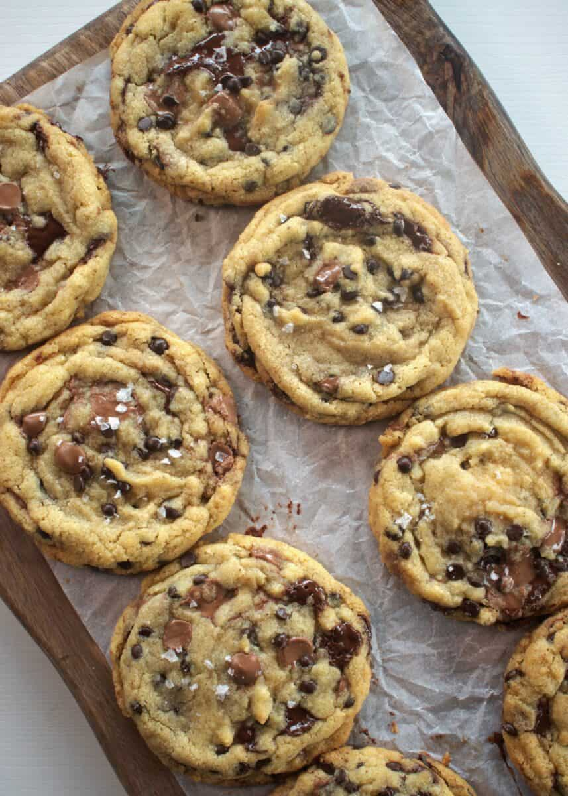

These cchocolate chip cookies are arguably the best classic treat you can make at home. All you need is butter, sugar, eggs, flour, and chocolate chips, and about 30 minutes of your time.

This recipe makes about 24 cookies. You’ll need 1 cup softened butter, ¾ cup white sugar, ¾ cup brown sugar, 2 eggs, 1 tsp vanilla, 2¼ cups flour, 1 tsp baking soda, ½ tsp salt, and 2 cups chocolate chips.
Built by Ryan Bissett · BMIS 235